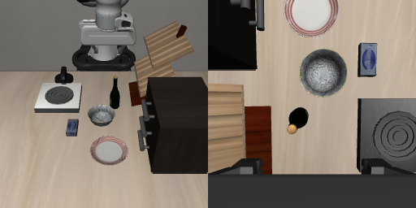

当前研究 · 更新于 2026-10-04 · GitHub 仓库
牛奶移远后，为什么转去抓奶酪盒？
此前观察到：指令一直是“抓牛奶”，牛奶在原位、移动6厘米时能被抓起；移动15厘米后，却转去抓奶酪盒。这次只研究这一个目标切换问题。
当前 goal：像研究大脑一样，先记录内部活动，再逐小块增强、削弱或替换。找到牛奶移远后，哪一部分内部计算导致转抓奶酪盒；检验局部干预能否恢复抓牛奶，并在牛奶再次换位置后继续跟着抓。
实验不支持，就推翻猜想。判断依据是实际抓取、局部干预和对照共同支持的结果。
先检验一个大胆猜想
牛奶移出熟悉范围后，某种熟悉抓法压过了牛奶的身份和当前位置信息。
暂时削弱候选部分，看是否能恢复抓牛奶。也做短暂扰动后撤掉的实验：小改变是否被拉回旧抓法，大改变是否能维持新目标？只抓另一个固定点或普遍乱动，都不能算恢复。
同时检查两个替代解释：牛奶移远后，视觉处理没有形成可靠的牛奶信息；或者动作本来朝向牛奶，但路径、夹爪和接触条件导致抓错。
这些都是待检验的解释。脑科学提供实验思路，没有证明这个模型存在相同机制。
实验怎样做到有说服力？
先固定权重、指令、机器人初态、相机、其他物体和推理设置，复核牛奶原位、移动6厘米、移动15厘米的结果，每种先用三个配对随机种子。复现后，再细查6至15厘米之间的目标切换范围。
记录转抓前后的真实内部活动，先粗查各层，再细查有线索的 attention head、MLP 或向量方向。网络的36层和30次去噪是两个需要分别检查的维度。碗／酒瓶对照只用于验证干预方法，不能直接解释牛奶场景的失败。
每个候选都要测：换回自己的数字、改变无关部分、施加相同强度的随机扰动，以及改变物体位置和随机种子。判断依据是局部干预、后续动作和实际抓取共同支持的证据。碗／酒瓶两句的文本长度不同，局部交换要正确对齐，不能悄悄补齐或截断。
每批实验结束后，更新首页：怀疑什么、改了哪里、实际发生什么、支持或推翻了什么、还不知道什么，并附对应图、视频和原始数据。进行中的实验明确标注进度。
研究依据：运动计划与短暂扰动、局部去抑制实验、信息如何参与目标选择。
最近完成的实际实验：说碗抓碗，说酒瓶抓酒瓶
同一份物理初态、同一张起始画面，分别说“把碗放到柜子上”和“把酒瓶放到柜子上”。同一个模型，没有重新训练、喂示范或替换内部数字。

| 指令 | 实际抓起谁？ | 最后放好了吗？ |
|---|---|---|
| 把碗放到柜子上 | 碗，最高抬起28.6 cm | 没有通过放置检查 |
| 把酒瓶放到柜子上 | 酒瓶，最高抬起30.0 cm | 最后仍夹着，没通过放置检查 |
这个对照说明：当前模型在这组场景里能随指令换目标。牛奶场景的失败还在；为什么失败，还没有定位到具体内部部分。
当前录像：抓碗。由 MuJoCo 执行模型动作；不是生成视频。
两条各128步，一个共同初态、一组配对噪声；不是成功率统计。抓起要求双侧夹爪接触、抬高超过2 cm并持续至少5份记录。抓起与最终放好分别判断。